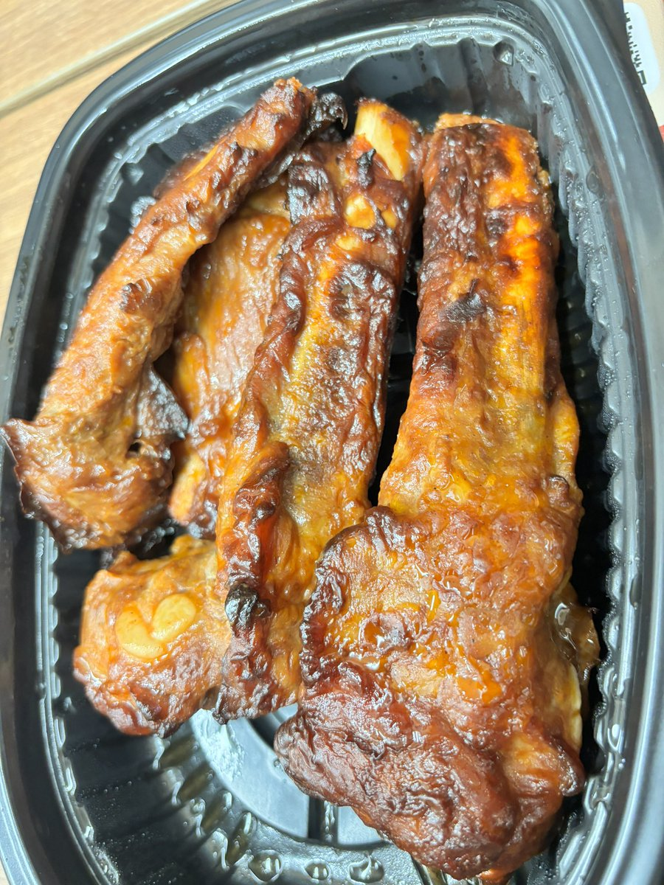
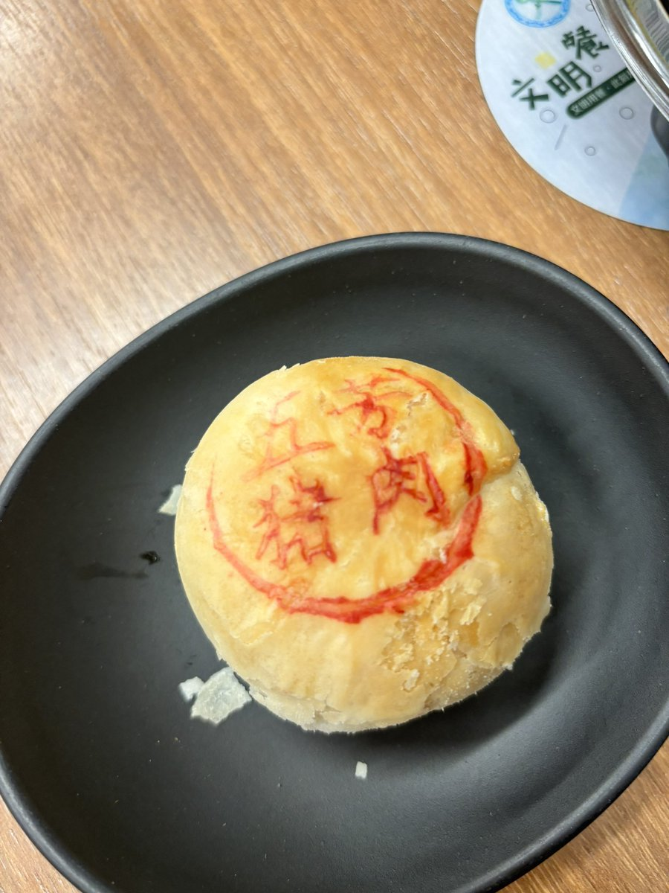

小虚空🍥
@tokerumaisurii
我刷到这里真的大半夜饿坏了，下定决心，我要订个羊蝎子，周五晚上拿到了直接做羊蝎子吃呜呜呜😭


涟漪aynm💨♿️🍼
@Ayanami_rin0
晚上和对象加餐了烤肋排，五芳斋大肉粽，馄炖，猪肉馅超香的月饼 #aynm吃什么
也就是说，我一觉睡到中午，下午五点前什么都没吃，五点吃了牛肉炒面，晚上吃了根火腿肠，肋排，馄炖，肉粽，月饼，逛超市买了酸奶随便喝了一袋，路上买了个巧乐兹（冬天吃冰淇淋更爽了）回家水果店买了橘子🍊
我tm真是猪 https://t.co/athdrpbU6I